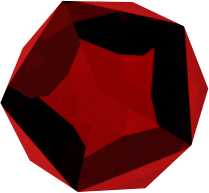

Legends say the garnet offers protection from nightmares and gives its wearer guidance in the night for those born in January. The red color of the gemstone symbolizes faith, love and courage. Wearing garnet can reportedly protect children from nightmares and can promote overall self-worth. Garnet protects the heart and lungs and increases energy levels.
